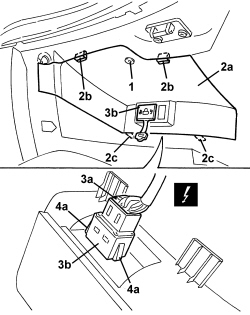

5570T55 BLUE & ME USB PORT - R.R.
- Path
- Procedures > 55 ELECTRICAL EQUIPMENT > 5570 ACCESSORIES > 5570T CAR RADIO/CAR TELEPHONE/VIDEO > 5570T55 BLUE & ME USB PORT - R.R.
- Kind
- repair procedure (removal / refitting; the operation number is the code)
- Applies to
- all engines; all production periods
- Interactive page
- https://sloeber94.github.io/elrnDB-aBrrSpdr/en/#/946001214
Applies to: all engines; all production periods
 Removing
Removing
 Refitting
Refitting- Open the glove compartment lid.
1. Undo the bolt.
2. Remove the panel (2a) releasing the retaining clip (2b), then the rigid retainers (2c).
3. Disconnect electrical connection (3a) of USB port (3b)
Description | Connector | |
|---|---|---|
3a | USB SOCKET |
4. Remove USB port (3b) by releasing retainers (4a).

Applies to: all engines; all production periods
Refitting
Removing- Check that the USB port is not damaged.
- Position the USB port and do up the retainers.
- Connect the electrical connection for the USB port.
- Position the panel and attach the retainers, then tighten the bolt.
- Check the USB port is operating correctly.
- Close the glove compartment.